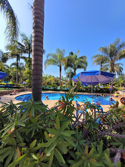

Casarão de Itu
 Imagem meramente ilustrativa. Substitua pela imagem real do local.O Casarão de Itu é um espaço de eventos e pousada que combina o charme da arquitetura histórica com a funcionalidade de um ambiente moderno. É ideal para quem busca uma experiência diferenciada, seja para uma estadia tranquila ou para a realização de eventos memoráveis.
O local oferece um ambiente elegante e acolhedor, com uma grande área ao ar livre e espaços internos bem decorados. É uma escolha popular para casamentos e festas, proporcionando um cenário encantador e serviços de alta qualidade.
Avaliação dos Hóspedes
Nota 4.0 (com base em sites de avaliação)
Comodidades
- Wi-Fi gratuito
- Estacionamento privativo
- Espaço para eventos
- Café da manhã incluso
- Cenário para fotos
Contato e Localização
- Endereço: Rod. Dom Gabriel Paulino Bueno Couto, Km 95, Itu - SP
- Telefone: (11) 97408-8202
Voltar